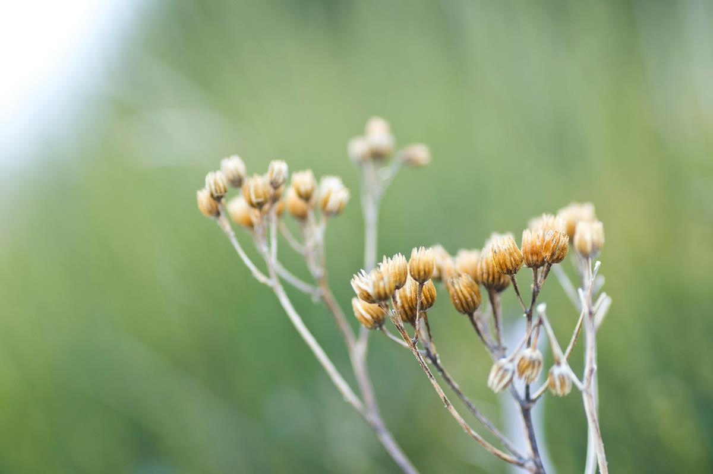

Communauté de communes
des Cévennes au Mont Lozère
Démarches, transports, petite enfance, santé, déchets, logement : les services du quotidien des 19 communes.
19 communes5 260 habitants619 km²

lieux pour être aidé dans vos démarches
Ligne 2512 €le trajet Mende, Florac, Alès
Vivre ici
Tous les services
Famille5
micro-crèches
Tournicoton, Ventoudoux, Les Pitchouns, Les Loustics, Les Péquélets. Accueils de loisirs Méli Mélo de 3 à 12 ans.
Santé2maisons de santé
Médiathèques14médiathèques en réseau
Collecte et déchèteries
Assurées depuis 2024 par le Syndicat mixte de l'environnement Sud Lozère.
Se logerClefs pour l'habitat, garantie Visale
Associations31 janv.date limite des demandes de subvention
UrbanismePLU et cartes communales
EmploiOffres d'emploi de la communauté et du territoire
À la une
Toutes les actualités
Transport solidaire : recherche de bénévoles
Des chauffeurs bénévoles sont recherchés pour les rendez-vous médicaux des habitants.

Aides pour le logement : Clefs pour l'habitat
Permanences au Collet de Dèze, à Saint Étienne Vallée Française, à Florac et à Villefort.
Conseil communautaire
Séances 2026
19 janv.5 mars22 oct.
19 communes
Le territoire
5 260habitants
619km²
- Bassurels
- Gabriac
- Le Collet de Dèze
- Le Pompidou
- Moissac Vallée Française
- Molezon
- Pont de Montvert, Sud Mont Lozère
- Saint André de Lancize
- Saint Étienne Vallée Française
- Saint Germain de Calberte
- Saint Hilaire de Lavit
- Saint Julien des Points
- Saint Martin de Boubaux
- Saint Martin de Lansuscle
- Saint Michel de Dèze
- Saint Privat de Vallongue
- Sainte Croix Vallée Française
- Ventalon en Cévennes
- Vialas
Dans cette commune
À lire
Tout le kiosqueKiosque
Le Vent des Bancels
Le journal du territoire, à feuilleter en ligne. Tous les numéros depuis le n°94.
 Le Vent des Bancels n°131
Le Vent des Bancels n°131
 Le Vent des Bancels n°130
Le Vent des Bancels n°130
 Bulletin communautaire n°1
Bulletin communautaire n°1
En images
Accéder aux galeries




Photographies d'Émilie Reydon.
À voir aussi